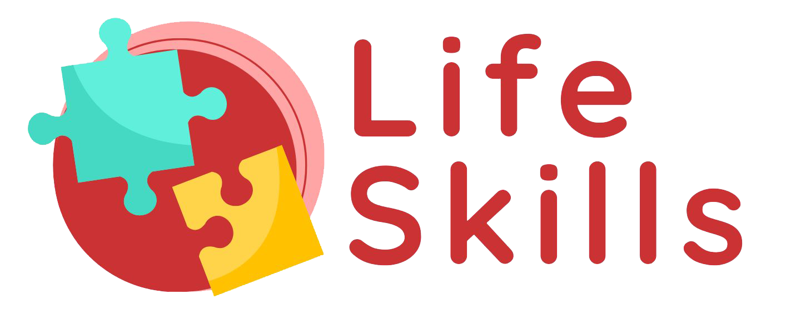

Ultra-ludique • Choix uniquement
♻️ Réinitialiser
Trouvez le job qui vous fait Vibrer
Parcours en cartes : tu choisis, tu avances. Aucun texte à écrire.
Écran 1/?
▶️ Commencer
🧾 Aller au résumé
Étape
…